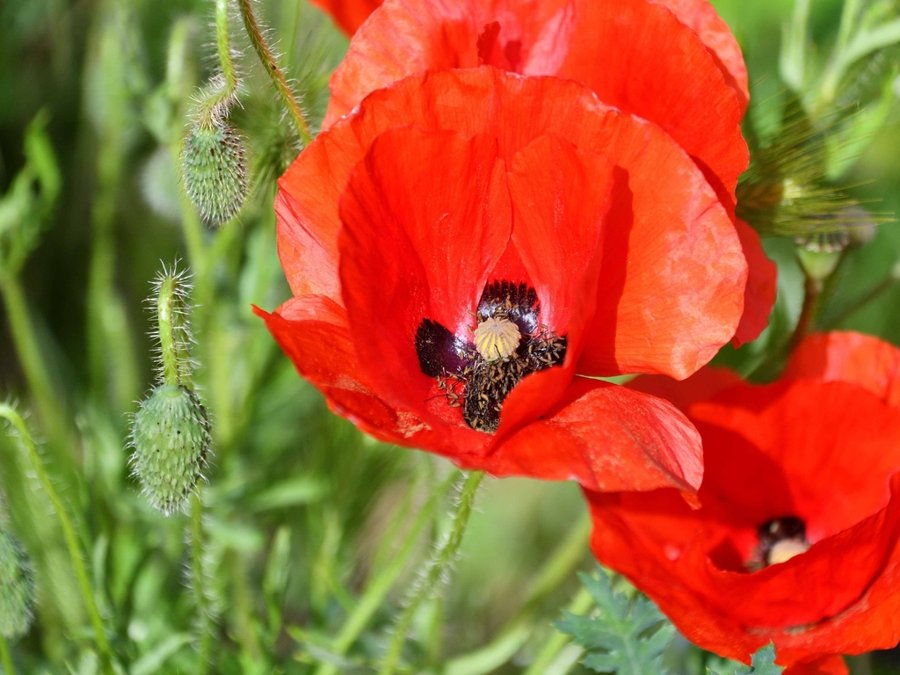

Get to know
what grows.
That flower on your walk. The leaf in your garden.
A photo is a lovely place to start.

GROW CURIOUS
Meet a plant.
One plant. One clear photo.
Leaves and flowers help tell the story.
Ready when you are. First use downloads about 22 MB.
Every leaf has
a name to discover.
Add a photo to see three possible matches and read about the plants behind them.
An identification is a starting point. Compare the shape of leaves, flowers and stems before settling on a name.
A few plants to consider.
Scores show the model’s relative preference, not the probability of a correct identification.
A small field guide.
A clear set of limits.
Your photo stays yours
The pretrained vision model runs in your browser. We don’t upload your photo, store it, or ask you to sign in. Plant profile lookups send only a species name to Wikipedia.
1,081 species, not every plant
This model knows a fixed list of species. It can give a convincing wrong answer, especially for an unfamiliar plant. Try a close-up with one plant in the centre.
Information with a source
Descriptions come from linked Wikipedia articles, rather than generated care advice. There is no LLM or paid API in this version.
Never use these suggestions alone to decide whether a plant is edible, medicinal or safe for pets.
Explore the model’s species list
What happened in our real-photo check?
On four iNaturalist research-grade photos, the expected species appeared first in three cases and second in one. This small spot check is not an accuracy benchmark. The thistle photo was incorrectly ranked as wild carrot first with a 76% model score. You can try all four photos above.
The model is pretrained by cpoisson on PlantNet-300K. We have not trained a new model. Model, dataset and reported evaluation ↗